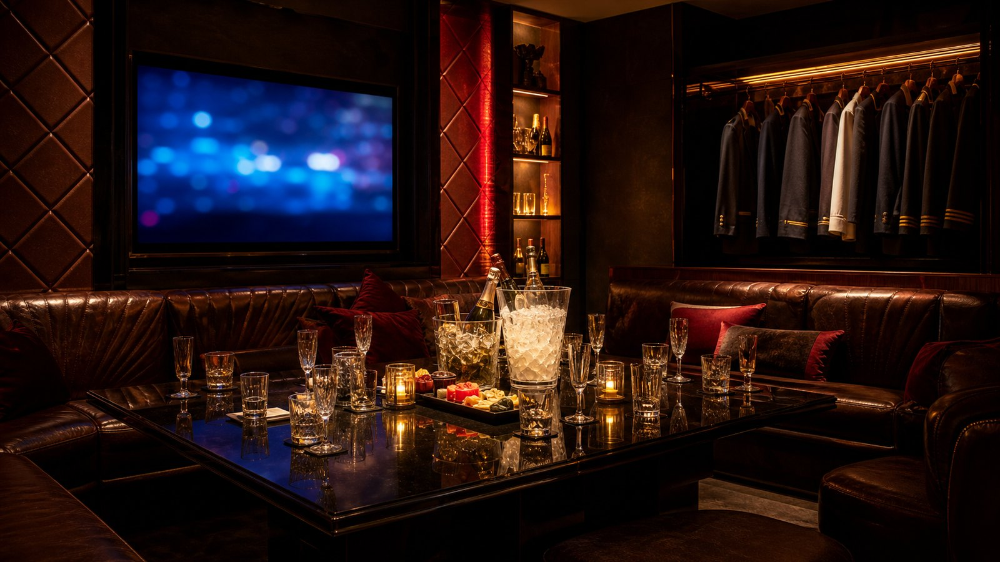
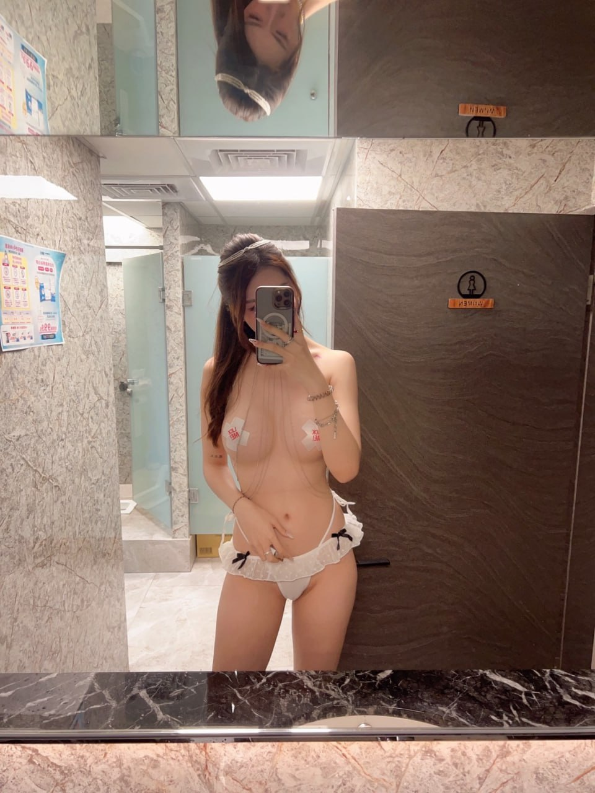

豪昇制服酒店適合什麼場合？
豪昇制服酒店位置資訊明確，適合想把錦州街周邊制服店列入比較的人。 常見適合情境包括第一次體驗台北制服店、三五好友下班放鬆、生日局或熱鬧聚會。制服店比較適合能接受熱鬧和互動的朋友；同行如果有人第一次來，幹部會更建議先把預算和遊玩尺度講清楚。
豪昇制服酒店位置資訊明確，適合想把錦州街周邊制服店列入比較的人。 豪昇制服酒店主打熱鬧與聚會感，適合三五好友、慶生或第一次嘗試制服店的人。若重視預算控制，建議先用試算系統估算基本時間與人數。
豪昇制服酒店地點可先以台北中山區／錦州街安排，地址資料為台北市中山區錦州街46號4樓；若是多人同行，出發前先約好集合點會比較順。
制服店重點在主題造型、KTV、桌面互動和包廂熱度，適合想把氣氛拉起來的朋友局。 包廂費約 NT$ 1,000 起、人頭費約 NT$ 500／人、服務費約 NT$ 1,000／包、檯費約 NT$ 3,300／100 分鐘；酒水、指定、加時與刷卡費可能另外計算。安排前先講人數、時間、預算和想要的氣氛，現場會比較好抓。
| 分類 | 制服店 |
|---|---|
| 區域 | 台北中山區／錦州街 |
| 地址／地點 | 台北市中山區錦州街46號4樓 |
| 營業時間 | 20:00–07:00 |
| 包廂費估算 | NT$ 1,000 起 |
| 人頭費估算 | NT$ 500／人 |
| 服務費估算 | NT$ 1,000／包 |
| 檯費估算 | NT$ 3,300／100 分鐘 |
| 基本時間 | 100 分鐘起 |
| 方案備註 | 啤酒招待；洋酒另計 |
依公開網路名單與消費資訊整理，實際營業狀態、價格與包廂安排以預約確認為準。
豪昇制服酒店位置資訊明確，適合想把錦州街周邊制服店列入比較的人。 常見適合情境包括第一次體驗台北制服店、三五好友下班放鬆、生日局或熱鬧聚會。制服店比較適合能接受熱鬧和互動的朋友；同行如果有人第一次來，幹部會更建議先把預算和遊玩尺度講清楚。
豪昇制服酒店地點可先以台北中山區／錦州街安排，地址資料為台北市中山區錦州街46號4樓；若是多人同行，出發前先約好集合點會比較順。 多人同行時，建議先把集合點、抵達時間和聯絡方式講好，進場會比較順。
和禮服店相比，制服店通常更活潑；和便服店相比，互動節奏更明顯，第一次體驗台北酒店時也比較容易進入狀況。 比較豪昇制服酒店時，可以一起看台北制服店推薦、林森北路制服店、中山區制服店、制服店地點、制服店包廂費，但真正要決定的是這次場合、人數和預算是否合拍。
預約重點
查豪昇制服酒店時，常會一起比較豪昇制服酒店、台北制服店推薦、林森北路制服店、中山區制服店、制服店地點、制服店包廂費、台北制服店、錦州街酒店。這些詞可以幫你快速確認店型、地點、費用和預約方向，不用只靠店名猜現場感。
搜尋制服店地點時，除了路名，也要把入口、樓層、包廂大小和基本時間一起確認。 豪昇制服酒店位置資訊明確，適合想把錦州街周邊制服店列入比較的人。 營業資訊目前為20:00–07:00，實際狀態請以預約回覆為準。
適合喜歡熱鬧、唱歌、桌面遊戲和慶生感的人；如果同行想安靜談事情，可以改看禮服店或便服店。 這間比較常見的安排是第一次體驗台北制服店、三五好友下班放鬆、生日局或熱鬧聚會，如果同行需求不同，可以先告訴幹部再調整店型。
包廂費約 NT$ 1,000 起、人頭費約 NT$ 500／人、服務費約 NT$ 1,000／包、檯費約 NT$ 3,300／100 分鐘；酒水、指定、加時與刷卡費可能另外計算。 制服店預算要把包廂費、檯費、人頭費、服務費、酒水和加時分開看，尤其熱門時段和大包廂要先確認。 預約時把人數、抵達時間、預算上限和包廂需求一起說，報價會更接近實際狀況。
找台北制服店推薦、林森北路制服店、中山區制服店、制服店地點、制服店包廂費時，很多客人最在意的不是名稱，而是地點是否好集合、費用能不能先抓、當天包廂是否符合人數。豪昇制服酒店地點可先以台北中山區／錦州街安排，地址資料為台北市中山區錦州街46號4樓；若是多人同行，出發前先約好集合點會比較順。
查豪昇制服酒店、台北制服店推薦、林森北路制服店、中山區制服店、制服店地點、制服店包廂費、台北制服店、錦州街酒店時，可以先把問題整理成三件事：這間店適不適合這次場合、基本消費怎麼算、現場節奏是否符合同行期待。豪昇制服酒店位置資訊明確，適合想把錦州街周邊制服店列入比較的人。
安排豪昇制服酒店時，我會先看這次是什麼局：這次是想唱歌熱鬧，還是只想先體驗制服店氣氛。店名只能當起點，真正影響體驗的是人數、時段、預算和同行朋友的喜好。
同行是否有第一次去酒店的新手，需要幹部先講清楚流程。如果你已經有想法，可以直接把「想熱鬧、想低調、想正式、想慶生」講清楚，幹部比較好避開不適合的安排。
包廂大小、基本時間與加時規則是否符合預算。制服店預算要把包廂費、檯費、人頭費、服務費、酒水和加時分開看，尤其熱門時段和大包廂要先確認。 這樣到現場比較不會因為加時、酒水或包廂調整而超出預期。
安排 豪昇制服酒店 前，先把日期、抵達時間、人數、預算上限和想要的氣氛講清楚，才不會只用店名猜現場感。
包廂費約 NT$ 1,000 起、人頭費約 NT$ 500／人、服務費約 NT$ 1,000／包、檯費約 NT$ 3,300／100 分鐘；酒水、指定、加時與刷卡費可能另外計算。 正式金額仍要依預約確認與現場規定為準。
豪昇制服酒店位置資訊明確，適合想把錦州街周邊制服店列入比較的人。 以下幾點是安排前最值得先看的地方。
主題制服與視覺記憶點明顯
適合唱歌、喝酒、桌面遊戲與慶生
新手容易理解流程
氣氛比商務型店家更直接
豪昇制服酒店地點資訊較明確，適合想把錦州街周邊排進行程的人。若是三五好友下班後臨時想聚，先確認抵達時間與包廂是否可訂，安排會比現場才找更穩。
Media
照片可以先看包廂座位、桌面大小和燈光明暗，再搭配影片判斷制服店現場是否夠熱鬧。



Related

皇冠制服酒店在台北制服店搜尋中辨識度高，適合想把氣氛做滿、又希望消費流程清楚的新手與朋友局。店型重點是主題制服、包廂唱歌與較直接的互動節奏。

金聰制服酒店常被歸類為林森北制服店代表名單，適合想體驗傳統台北酒店包廂文化的客人。預約時可先確認當日包廂大小、公關安排與基本消費。

名享公主制服酒店偏向公主店與主題氣氛路線，適合想要更高辨識度、熱鬧互動與舞台感的客人。實際玩法與價格以預約確認為準。
豪昇制服酒店目前整理為制服店。豪昇制服酒店位置資訊明確，適合想把錦州街周邊制服店列入比較的人。 比較適合主題制服、KTV、朋友聚會與生日局，如果不確定是否合適，可以先說明人數、預算和聚會目的。
豪昇制服酒店地點可先以台北中山區／錦州街安排，地址資料為台北市中山區錦州街46號4樓；若是多人同行，出發前先約好集合點會比較順。
包廂費約 NT$ 1,000 起、人頭費約 NT$ 500／人、服務費約 NT$ 1,000／包、檯費約 NT$ 3,300／100 分鐘；酒水、指定、加時與刷卡費可能另外計算。正式金額仍以預約回覆與現場規定為準。
可以，但第一次建議先請幹部說明基本時間、包廂費、人頭費、服務費、檯費、酒水和加時規則。先把界線、預算和想要的氣氛講清楚，安排會更順。
Reservation
提供台北制服店、林森北酒店、台北禮服店、便服店與男模會館預約諮詢。請先提供日期、時間、人數、預算與偏好店型。